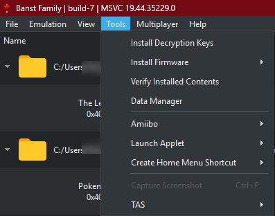
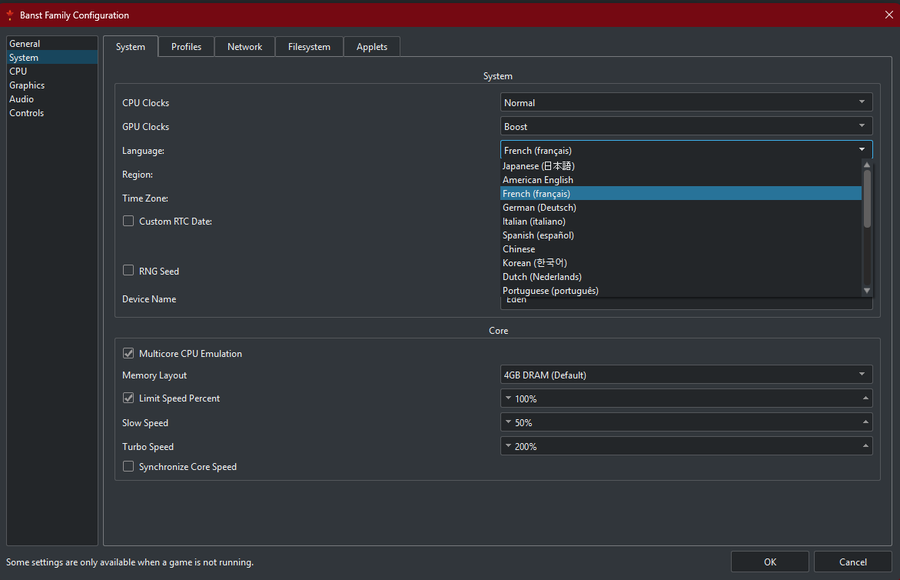
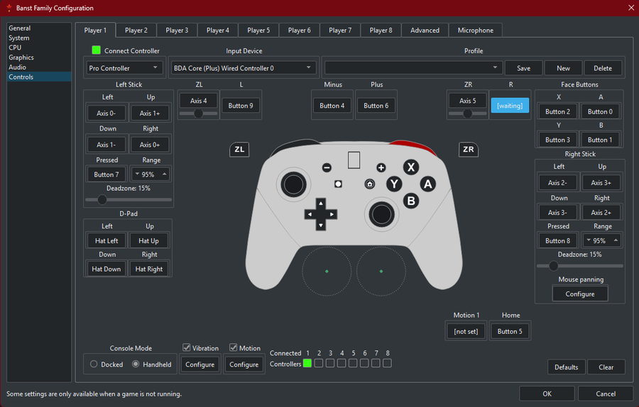
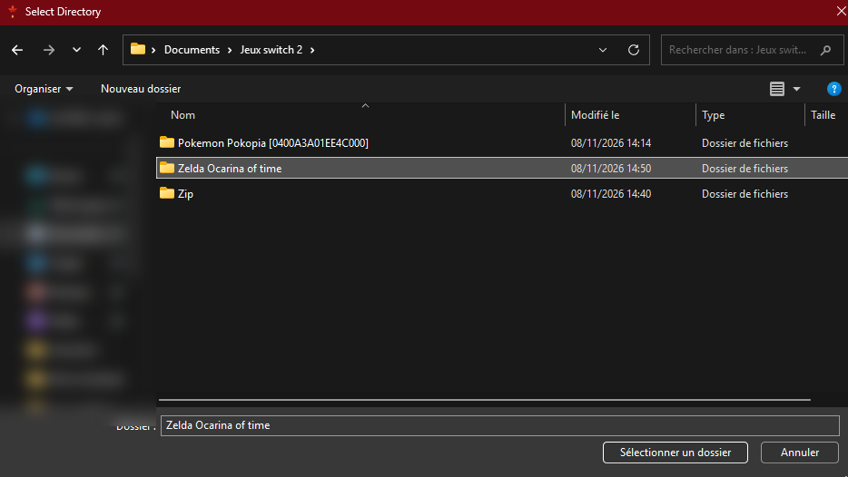
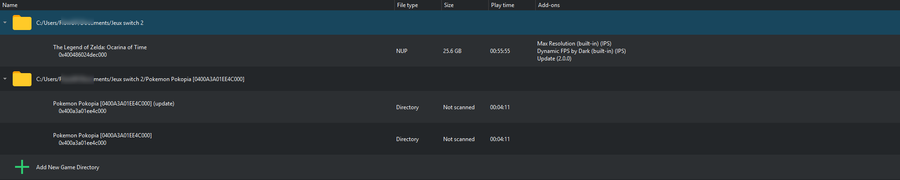

Von null bis zum ersten Spiel, Schritt für Schritt.
1Installer Erable
Téléchargez erable-windows-x86_64.zip depuis la dernière version : Télécharger Erable
Faites un clic droit sur le zip → Extraire tout…
Dans le dossier obtenu, lancez erable.exe.
Les mises à jour arrivent toutes seules : au démarrage, Erable propose d'installer la nouvelle version quand il y en a une.
Si Windows signale qu'il manque des bibliothèques, lancez d'abord vc_redist.x64.exe, qui se trouve dans le même dossier.
2Ajouter le firmware et les clés de votre Switch
L'émulateur a besoin du système (firmware) et des clés (prod.keys) extraits de votre propre console. Ces fichiers appartiennent à Nintendo : ils ne sont pas fournis avec Erable, et il ne faut ni les télécharger ni les partager.
Extrayez le firmware et prod.keys de votre Switch.
Dans Erable, en haut à gauche : Tools → Install Firmware → From ZIP, puis choisissez le zip du firmware.
Toujours en haut à gauche : Tools → Install Decryption Keys, puis choisissez votre fichier prod.keys.

Le menu Tools : Install Decryption Keys et Install Firmware.
Ne téléchargez jamais de clés ou de firmware sur Internet : ces fichiers circulent surtout sur des sites qui diffusent aussi des virus.
3Jeux en français
En haut à gauche : Emulation → Configure, puis System.
Language : French (français).
Region : Europe.
Validez avec OK.

Onglet System : la langue des jeux.
4Jouer avec une manette
Branchez votre manette, puis allez dans Emulation → Configure → Controls.
Input Device : choisissez votre manette (en général la dernière de la liste).
Cliquez sur chaque case (A, B, X, Y, sticks, gâchettes…), puis appuyez sur la touche correspondante de la manette.
Validez avec OK.

Onglet Controls : la case bleue [waiting] attend que vous appuyiez sur une touche.
Si la manette n'apparaît pas : fermez Steam (il capture les manettes), essayez un autre câble USB, puis relancez Erable.
5Ajouter vos jeux et jouer
Rangez vos jeux (extraits de vos cartouches ou de vos achats) dans un dossier Jeux Switch 2, un sous-dossier par jeu.
Dans la liste des jeux, cliquez sur + Add New Game Directory.
Sélectionnez le dossier du jeu, puis Sélectionner un dossier.
Double-cliquez sur le jeu pour le lancer.

Choisir le dossier d'un jeu.

Les jeux apparaissent dans la liste, avec leur temps de jeu et leurs add-ons.
La première fois, un jeu peut saccader quelques minutes : l'émulateur prépare ses shaders, puis tout devient plus fluide. Un souci ? Signalez-le ici.
1Install Erable
Download erable-windows-x86_64.zip from the latest version: Download Erable
Right-click the zip → Extract All…
In the folder you get, run erable.exe.
Updates come on their own: at startup, Erable offers to install the new version when there is one.
If Windows says libraries are missing, first run vc_redist.x64.exe, which is in the same folder.
2Add your Switch's firmware and keys
The emulator needs the system (firmware) and the keys (prod.keys) dumped from your own console. These files belong to Nintendo: they don't come with Erable, and you must neither download nor share them.
Dump the firmware and prod.keys from your Switch.
In Erable, top left: Tools → Install Firmware → From ZIP, then pick the firmware zip.
Still top left: Tools → Install Decryption Keys, then pick your prod.keys file.
The Tools menu: Install Decryption Keys and Install Firmware.
Never download keys or firmware from the Internet: these files mostly circulate on sites that also spread viruses.
3Games in your language
Top left: Emulation → Configure, then System.
Language: your language, e.g. British English.
Region: Europe (or USA).
Confirm with OK.
The System tab: the games' language.
4Play with a controller
Plug in your controller, then go to Emulation → Configure → Controls.
Input Device: pick your controller (usually the last one in the list).
Click each box (A, B, X, Y, sticks, triggers…), then press the matching button on the controller.
Confirm with OK.
The Controls tab: the blue [waiting] box waits for you to press a button.
If the controller doesn't show up: close Steam (it captures controllers), try another USB cable, then restart Erable.
5Add your games and play
Keep your games (dumped from your cartridges or purchases) in a Switch 2 Games folder, one subfolder per game.
In the game list, click + Add New Game Directory.
Select the game's folder, then Select Folder.
Double-click the game to start it.
Picking a game's folder.Games show up in the list with their play time and add-ons.
The first time, a game may stutter for a few minutes while the emulator prepares its shaders; then it all gets smoother. A problem? Report it here.
1Erable installieren
Lade erable-windows-x86_64.zip aus der neuesten Version herunter: Erable herunterladen
Rechtsklick auf die ZIP-Datei → Alle extrahieren…
Starte im entpackten Ordner erable.exe.
Updates kommen von selbst: Beim Start bietet Erable an, eine neue Version zu installieren, sobald es eine gibt.
Meldet Windows fehlende Bibliotheken, starte zuerst vc_redist.x64.exe aus demselben Ordner.
2Firmware und Schlüssel deiner Switch hinzufügen
Der Emulator braucht das System (Firmware) und die Schlüssel (prod.keys) aus deiner eigenen Konsole. Diese Dateien gehören Nintendo: Sie sind nicht in Erable enthalten, und du darfst sie weder herunterladen noch weitergeben.
Lies Firmware und prod.keys aus deiner Switch aus.
In Erable oben links: Tools → Install Firmware → From ZIP, dann die ZIP-Datei der Firmware wählen.
Ebenfalls oben links: Tools → Install Decryption Keys, dann deine Datei prod.keys wählen.
Das Menü Tools: Install Decryption Keys und Install Firmware.
Lade nie Schlüssel oder Firmware aus dem Internet herunter: Diese Dateien kursieren vor allem auf Seiten, die auch Viren verbreiten.
3Spiele auf Deutsch
Oben links: Emulation → Configure, dann System.
Language: German (Deutsch).
Region: Europe.
Mit OK bestätigen.
Reiter System: die Sprache der Spiele.
4Mit einem Controller spielen
Schließe deinen Controller an und öffne Emulation → Configure → Controls.
Input Device: Wähle deinen Controller (meist der letzte in der Liste).
Klicke auf jedes Feld (A, B, X, Y, Sticks, Trigger …) und drücke dann die passende Taste am Controller.
Mit OK bestätigen.
Reiter Controls: Das blaue Feld [waiting] wartet auf einen Tastendruck.
Taucht der Controller nicht auf: Schließe Steam (es fängt Controller ab), probiere ein anderes USB-Kabel und starte Erable neu.
5Spiele hinzufügen und spielen
Lege deine Spiele (aus deinen Modulen oder Käufen ausgelesen) in einen Ordner Switch-2-Spiele, einen Unterordner pro Spiel.
Klicke in der Spieleliste auf + Add New Game Directory.
Wähle den Ordner des Spiels und dann Ordner auswählen.
Doppelklicke auf das Spiel, um es zu starten.
Den Ordner eines Spiels auswählen.Die Spiele erscheinen in der Liste, mit Spielzeit und Add-ons.
Beim ersten Mal kann ein Spiel ein paar Minuten ruckeln, während der Emulator seine Shader vorbereitet; danach läuft alles flüssiger. Ein Problem? Hier melden.
 Erable
Erable